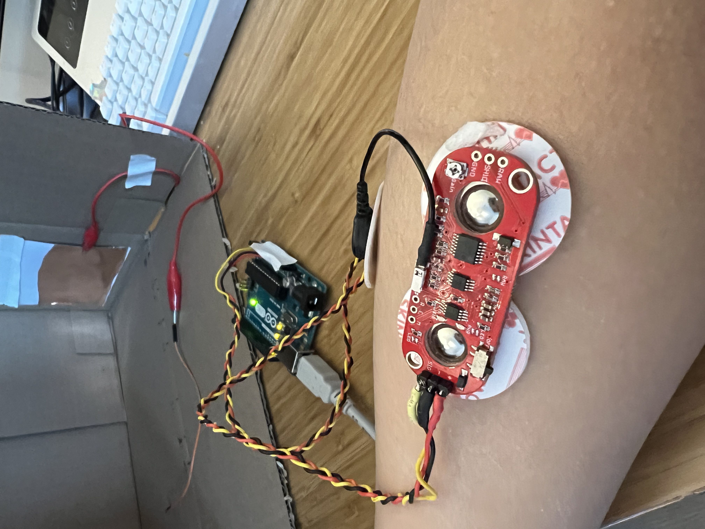
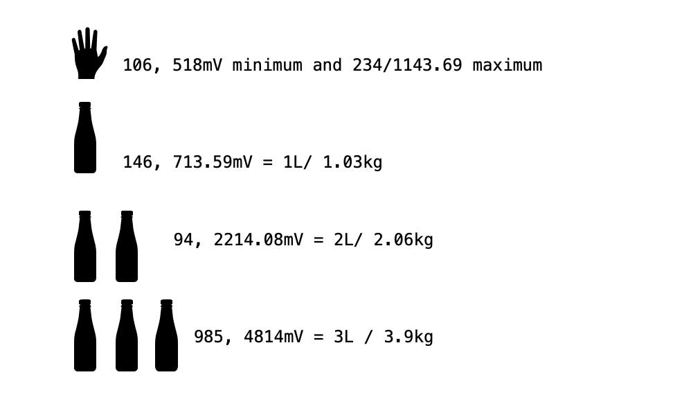

<br>
#### <h1>Week 6: Input </h1>
<br>
<P>
////// part 1: proximity sensing
<br>
<br>
I build a simple proximity sensor using millis() for time interval by following <a href="https://www.bareconductive.com/blogs/resources/make-a-basic-capacitive-sensor-with-electric-paint-and-arduino">this</a> online blog post
<br>
<br>
<img src="box-test1.jpeg" style="width:720px;height:640px;">
<br>
<br>
<br>
<br>
Code snippet:
<pre>
<code>
#include <CapacitiveSensor.h>
CapacitiveSensor sensor = CapacitiveSensor(4,2); // 1M resistor between pins 4 & 2, pin 2 is sensor pin
void setup() {
Serial.begin(9600);
}
void loop() {
long measurement = sensor.capacitiveSensor(30);
Serial.println(measurement);
long interval = 1000;
}
</code>
</pre>
<br>
To callibrate the sensor input data and eliminate background noise as much as possible, I made a isolotated testing environemnet by using a cardboard box.
The length of the testing area is roughly around 36cm. For preparation, I taped a copper piece on one side and marked a few distance points on the box.
<br>
<br>
<img src="box-testing.jpeg" style="width:720px;height:640px;">
<br>
<br>
By moving my hand position along the marked Axis, i get different result values. I found that thhe sensor works best within a 10cm distance as shown in the graphic mapping.
<br>
<img src="data mapping.png" style="width:600px;height:240px;">
</P>
<br>
////// part 2: EMG sensing
<br>
<br>
I have a few Myo EMG sensors, so I decided to it to measure the correlation between voltage signal and weight.
Step 1: I recorded the minimum and maxmum sensor values I can reach without hold objects on my right hand.
<img src="emg schematic.jpeg" style="width:378px;height:504px;">

minimum value: sensor value 94, voltage 4741.10mV;
maxmus value: sensor value 234, voltage 1143.69mV;
Step 2: Then I deceided to measure how much voltage I need to hold objects with different weight. For this object, I prepared five evian spring water bottle with same size and weight (1L or 1.03kg), and a light-weight container to hold the bottles.
here are three sets of values i recorded.
<br>
<br>
<img src="empty.jpeg" style="width:378px;height:504px;">
<img src="1bottle.jpeg" style="width:378px;height:504px;">
<img src="2bottle.jpeg" style="width:378px;height:504px;">
<img src="3bottle.jpeg" style="width:378px;height:504px;">
<br>
<br>
Code snippet:
<pre>
<code>
void setup()
{
Serial.begin(9600);
}
void loop()
{
float sensorValue = analogRead(A1);
float millivolt = (sensorValue/1023)*5;
Serial.print("Sensor Value: ");
Serial.println(sensorValue);
Serial.print("Voltage: ");
Serial.print(millivolt*1000);
Serial.println(" mV");
Serial.println("");
long interval = 10000;
}
</code>
</pre>

<br>
<br>
The correlation between the recorded data and the weight was not so stable. It depends on many different factors such as position, holding time, speed and object placement inside the container.
But it was an interesting experiment and i think it would be a great sensor for capturing improvisational bodily gestures. One direction i learned from this week's experiment is that instead of recording discreate data points of EMG signal,
maybe it would be more effcient to set up some kind of threshold to capture the acceleration time of each pulse.
Back to [Home](../index.html)